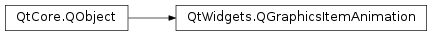

QGraphicsItemAnimation¶
Synopsis¶
Functions¶
- def
clear() - def
horizontalScaleAt(step) - def
horizontalShearAt(step) - def
item() - def
matrixAt(step) - def
posAt(step) - def
posList() - def
rotationAt(step) - def
rotationList() - def
scaleList() - def
setItem(item) - def
setPosAt(step, pos) - def
setRotationAt(step, angle) - def
setScaleAt(step, sx, sy) - def
setShearAt(step, sh, sv) - def
setTimeLine(timeLine) - def
setTranslationAt(step, dx, dy) - def
shearList() - def
timeLine() - def
translationList() - def
verticalScaleAt(step) - def
verticalShearAt(step) - def
xTranslationAt(step) - def
yTranslationAt(step)
Virtual functions¶
- def
afterAnimationStep(step) - def
beforeAnimationStep(step)
Detailed Description¶
The
PySide2.QtWidgets.QGraphicsItemAnimationclass provides simple animation support forPySide2.QtWidgets.QGraphicsItem.The
PySide2.QtWidgets.QGraphicsItemAnimationclass animates aPySide2.QtWidgets.QGraphicsItem. You can schedule changes to the item’s transformation matrix at specified steps. ThePySide2.QtWidgets.QGraphicsItemAnimationclass has a current step value. When this value changes the transformations scheduled at that step are performed. The current step of the animation is set with thesetStep()function.
PySide2.QtWidgets.QGraphicsItemAnimationwill do a simple linear interpolation between the nearest adjacent scheduled changes to calculate the matrix. For instance, if you set the position of an item at values 0.0 and 1.0, the animation will show the item moving in a straight line between these positions. The same is true for scaling and rotation.It is usual to use the class with a
PySide2.QtCore.QTimeLine. The timeline’sPySide2.QtCore.QTimeLine.valueChanged()signal is then connected to thesetStep()slot. For example, you can set up an item for rotation by callingsetRotationAt()for different step values. The animations timeline is set with thePySide2.QtWidgets.QGraphicsItemAnimation.setTimeLine()function.An example animation with a timeline follows:
ball = QGraphicsEllipseItem(0, 0, 20, 20) timer = QTimeLine(5000) timer.setFrameRange(0, 100) animation = QGraphicsItemAnimation() animation.setItem(ball) animation.setTimeLine(timer) for i in range(200): animation.setPosAt(i / 200.0, QPointF(i, i)) scene = QGraphicsScene() scene.setSceneRect(0, 0, 250, 250) scene.addItem(ball) view = QGraphicsView(scene) view.show() timer.start()Note that steps lie between 0.0 and 1.0. It may be necessary to use
PySide2.QtCore.QTimeLine.setUpdateInterval(). The default update interval is 40 ms. A scheduled transformation cannot be removed when set, so scheduling several transformations of the same kind (e.g., rotations) at the same step is not recommended.
-
class
PySide2.QtWidgets.QGraphicsItemAnimation([parent=nullptr])¶ Parameters: parent – PySide2.QtCore.QObjectConstructs an animation object with the given
parent.
-
PySide2.QtWidgets.QGraphicsItemAnimation.afterAnimationStep(step)¶ Parameters: step – PySide2.QtCore.qrealThis method is meant to be overridden in subclasses that need to execute additional code after a new step has taken place. The animation
stepis provided for use in cases where the action depends on its value.
-
PySide2.QtWidgets.QGraphicsItemAnimation.beforeAnimationStep(step)¶ Parameters: step – PySide2.QtCore.qrealThis method is meant to be overridden by subclassed that needs to execute additional code before a new step takes place. The animation
stepis provided for use in cases where the action depends on its value.
-
PySide2.QtWidgets.QGraphicsItemAnimation.clear()¶ Clears the scheduled transformations used for the animation, but retains the item and timeline.
-
PySide2.QtWidgets.QGraphicsItemAnimation.horizontalScaleAt(step)¶ Parameters: step – PySide2.QtCore.qrealReturn type: PySide2.QtCore.qrealReturns the horizontal scale for the item at the specified
stepvalue.
-
PySide2.QtWidgets.QGraphicsItemAnimation.horizontalShearAt(step)¶ Parameters: step – PySide2.QtCore.qrealReturn type: PySide2.QtCore.qrealReturns the horizontal shear for the item at the specified
stepvalue.
-
PySide2.QtWidgets.QGraphicsItemAnimation.item()¶ Return type: PySide2.QtWidgets.QGraphicsItemReturns the item on which the animation object operates.
-
PySide2.QtWidgets.QGraphicsItemAnimation.matrixAt(step)¶ Parameters: step – PySide2.QtCore.qrealReturn type: PySide2.QtGui.QMatrixReturns the matrix used to transform the item at the specified
stepvalue.
-
PySide2.QtWidgets.QGraphicsItemAnimation.posAt(step)¶ Parameters: step – PySide2.QtCore.qrealReturn type: PySide2.QtCore.QPointFReturns the position of the item at the given
stepvalue.
-
PySide2.QtWidgets.QGraphicsItemAnimation.posList()¶ Return type: Returns all explicitly inserted positions.
-
PySide2.QtWidgets.QGraphicsItemAnimation.reset()¶ Resets the item to its starting position and transformation.
You can call
PySide2.QtWidgets.QGraphicsItemAnimation.setStep()(0) instead.
-
PySide2.QtWidgets.QGraphicsItemAnimation.rotationAt(step)¶ Parameters: step – PySide2.QtCore.qrealReturn type: PySide2.QtCore.qrealReturns the angle at which the item is rotated at the specified
stepvalue.
-
PySide2.QtWidgets.QGraphicsItemAnimation.rotationList()¶ Return type: Returns all explicitly inserted rotations.
-
PySide2.QtWidgets.QGraphicsItemAnimation.scaleList()¶ Return type: Returns all explicitly inserted scales.
-
PySide2.QtWidgets.QGraphicsItemAnimation.setItem(item)¶ Parameters: item – PySide2.QtWidgets.QGraphicsItemSets the specified
itemto be used in the animation.
-
PySide2.QtWidgets.QGraphicsItemAnimation.setPosAt(step, pos)¶ Parameters: - step –
PySide2.QtCore.qreal - pos –
PySide2.QtCore.QPointF
Sets the position of the item at the given
stepvalue to thepointspecified.- step –
-
PySide2.QtWidgets.QGraphicsItemAnimation.setRotationAt(step, angle)¶ Parameters: - step –
PySide2.QtCore.qreal - angle –
PySide2.QtCore.qreal
Sets the rotation of the item at the given
stepvalue to theanglespecified.- step –
-
PySide2.QtWidgets.QGraphicsItemAnimation.setScaleAt(step, sx, sy)¶ Parameters: - step –
PySide2.QtCore.qreal - sx –
PySide2.QtCore.qreal - sy –
PySide2.QtCore.qreal
Sets the scale of the item at the given
stepvalue using the horizontal and vertical scale factors specified bysxandsy.- step –
-
PySide2.QtWidgets.QGraphicsItemAnimation.setShearAt(step, sh, sv)¶ Parameters: - step –
PySide2.QtCore.qreal - sh –
PySide2.QtCore.qreal - sv –
PySide2.QtCore.qreal
Sets the shear of the item at the given
stepvalue using the horizontal and vertical shear factors specified byshandsv.- step –
-
PySide2.QtWidgets.QGraphicsItemAnimation.setStep(x)¶ Parameters: x – PySide2.QtCore.qrealSets the current
stepvalue for the animation, causing the transformations scheduled at this step to be performed.
-
PySide2.QtWidgets.QGraphicsItemAnimation.setTimeLine(timeLine)¶ Parameters: timeLine – PySide2.QtCore.QTimeLineSets the timeline object used to control the rate of animation to the
timeLinespecified.
-
PySide2.QtWidgets.QGraphicsItemAnimation.setTranslationAt(step, dx, dy)¶ Parameters: - step –
PySide2.QtCore.qreal - dx –
PySide2.QtCore.qreal - dy –
PySide2.QtCore.qreal
Sets the translation of the item at the given
stepvalue using the horizontal and vertical coordinates specified bydxanddy.- step –
-
PySide2.QtWidgets.QGraphicsItemAnimation.shearList()¶ Return type: Returns all explicitly inserted shears.
-
PySide2.QtWidgets.QGraphicsItemAnimation.timeLine()¶ Return type: PySide2.QtCore.QTimeLineReturns the timeline object used to control the rate at which the animation occurs.
-
PySide2.QtWidgets.QGraphicsItemAnimation.translationList()¶ Return type: Returns all explicitly inserted translations.
-
PySide2.QtWidgets.QGraphicsItemAnimation.verticalScaleAt(step)¶ Parameters: step – PySide2.QtCore.qrealReturn type: PySide2.QtCore.qrealReturns the vertical scale for the item at the specified
stepvalue.
-
PySide2.QtWidgets.QGraphicsItemAnimation.verticalShearAt(step)¶ Parameters: step – PySide2.QtCore.qrealReturn type: PySide2.QtCore.qrealReturns the vertical shear for the item at the specified
stepvalue.
-
PySide2.QtWidgets.QGraphicsItemAnimation.xTranslationAt(step)¶ Parameters: step – PySide2.QtCore.qrealReturn type: PySide2.QtCore.qrealReturns the horizontal translation of the item at the specified
stepvalue.
-
PySide2.QtWidgets.QGraphicsItemAnimation.yTranslationAt(step)¶ Parameters: step – PySide2.QtCore.qrealReturn type: PySide2.QtCore.qrealReturns the vertical translation of the item at the specified
stepvalue.
© 2018 The Qt Company Ltd. Documentation contributions included herein are the copyrights of their respective owners. The documentation provided herein is licensed under the terms of the GNU Free Documentation License version 1.3 as published by the Free Software Foundation. Qt and respective logos are trademarks of The Qt Company Ltd. in Finland and/or other countries worldwide. All other trademarks are property of their respective owners.